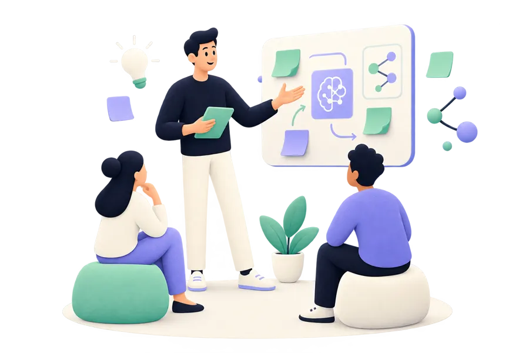
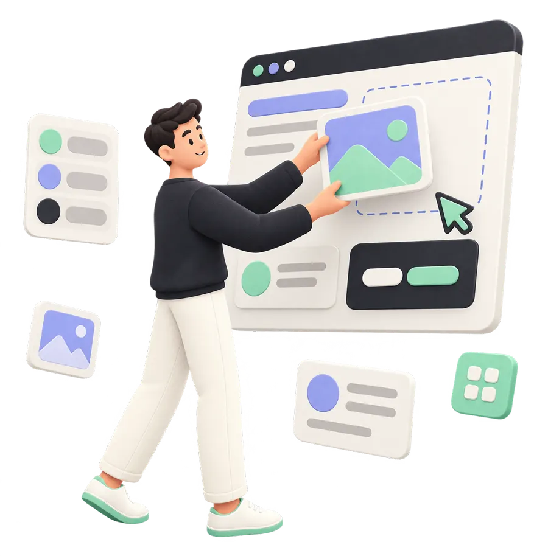
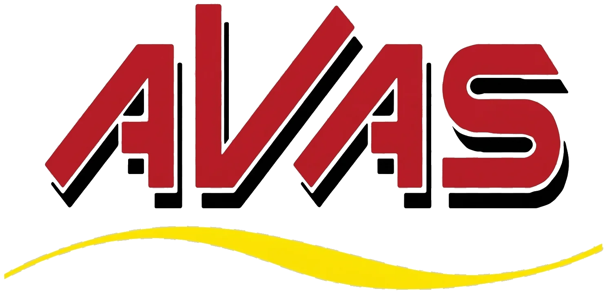
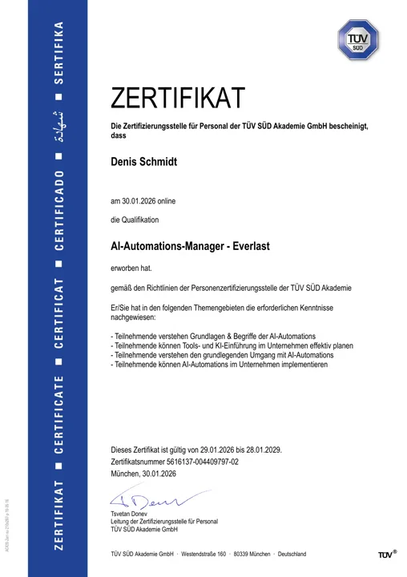
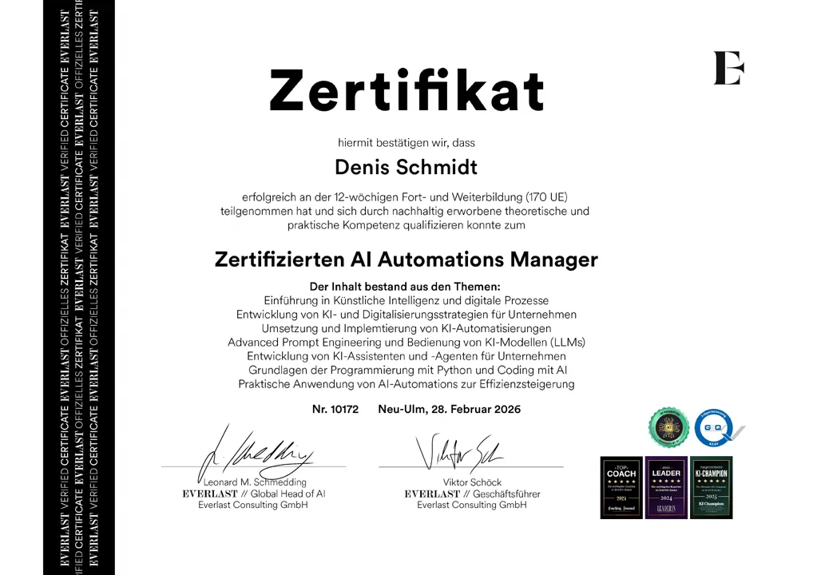
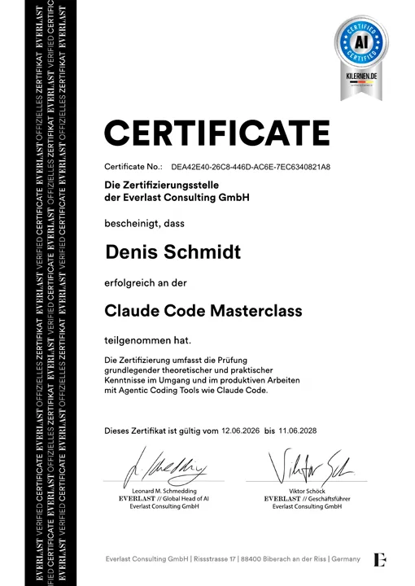
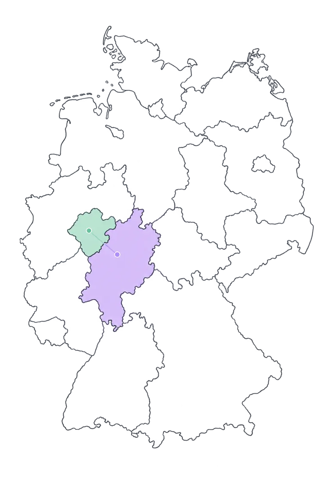

Nicht:
TÜV-zertifiziert AI Automation Manager by everlast
KI-Beratung für Unternehmen, die erst verstehen wollen, bevor sie investieren.
Nicht raten.
Klarheit schaffen.
Wir prüfen, wo KI wirklich wirkt — und was vorher geklärt werden muss.
Scroll, um Klarheit zu schaffen
Hintergrund: KI-generiert
Viele KI-Projekte starten mit der falschen Frage.
Die Antwort ist
nicht immer mehr KI.
Was können wir
Die übliche erste Frage.Sondern:
Was lohnt sich
wirklich?
Die Frage, die Wirkung schafft.Dann:
Erst Klarheit.
Dann KI.
Ein Schritt, der zum Unternehmen passt.01 / 03
Unser Ansatz
Keine Tool-Show.
Ein klarer Weg.
Scrollen Sie durch den Prozess ↓
Verstehen
Wir schauen auf Prozesse, Engpässe und die Ausgangslage.
Bewerten
Wir prüfen Daten, Aufwand, Risiken und wirtschaftlichen Nutzen.
Entscheiden
Sie erhalten einen priorisierten nächsten Schritt — auch wenn er erst einmal nicht KI heißt.
Umsetzen
Wenn es sinnvoll ist, begleiten wir das Vorhaben bis in den Betrieb.
Angebote für KI-Beratung und Automatisierung
01Unser Startpunkt
KI-Readiness
& Potenzialanalyse
Die fundierte Entscheidungsgrundlage für Ihr nächstes KI-Vorhaben.
02Gemeinsam starten

KI-Workshops
Ein gemeinsamer Blick auf Möglichkeiten, Fragen und konkrete Anwendungsfälle.
03Wirksam einführen
KI & Automation
umsetzen
Wir bringen ausgewählte Use Cases strukturiert und verantwortungsvoll in die Realität.
04Präsenz schaffen

Webdesign
Digitale Auftritte, die klar zeigen, wofür Ihr Unternehmen steht.
05Richtung geben
KI-Strategie
& Roadmap
Eine Orientierung, die aus vielen Möglichkeiten einen gangbaren Weg macht.
01 / 05 Scrollen oder klicken
Unternehmen, die auf unsere Arbeit vertrauen
Referenzen

Über mich
20 Jahre Praxis.
Jetzt KI wirksam machen.
Seit über 20 Jahren arbeite ich operativ dort, wo Unternehmen funktionieren müssen: im Controlling, Einkauf und in der Buchhaltung.
Heute verbinde ich diese Erfahrung als TÜV-zertifizierter AI Automation Manager mit KI und Automatisierung. Ich verstehe Prozesse, bewerte Potenziale realistisch und begleite Unternehmen dabei, die passenden Lösungen sinnvoll einzuführen und umzusetzen.
TÜV-zertifiziertAI Automation Managerby everlast


everlast Consulting
Zertifizierter AI
Automations Manager
12-wöchige Fort- und WeiterbildungOriginal ansehen ↗
01 / 03
Nachweis auswählen- 0120+ Jahre operative PraxisErfahrung, die nicht aus Folien, sondern aus dem Unternehmensalltag kommt.
- 02Controlling & EinkaufWirtschaftlichkeit, Abläufe und Verantwortungen im Blick.
- 03Buchhaltung & GesundheitswesenErfahrung in sensiblen, prozessintensiven Arbeitsbereichen.
- 04InformationssicherheitRisiken und Datenverantwortung von Anfang an mitdenken.
- 05AI Automation ManagementKI-Potenziale in sinnvolle, umsetzbare Schritte übersetzen.
Aus Frankenberg (Eder). Für Unternehmen, die weiterdenken.
KI-Beratung in Frankenberg
und der Region.

Von Marburg über Frankenberg und Korbach bis ins Sauerland.
In Hessen und im Grenzgebiet zu Nordrhein-Westfalen begleite ich kleine und mittlere Unternehmen vor Ort. Bundesweit ist die Zusammenarbeit auch remote möglich.
Der Fokus liegt auf der Frage, wo ein konkreter Prozess wirklich von KI profitiert, bevor Zeit und Budget in die Umsetzung fließen.
FAQ
Klarheit beginnt mit den richtigen Fragen.
Ja. Das Erstgespräch ist kostenfrei, unverbindlich und vertraulich. Es dient dazu, Ihre Ausgangslage und einen sinnvollen nächsten Schritt zu klären — nicht einer kostenlosen Ausarbeitung.
Für Unternehmen, die KI oder Automatisierung konkret prüfen, aber vor einer Investition Klarheit über Prozesse, Daten, Aufwand, Risiken und Nutzen gewinnen möchten.
Bei klar abgegrenzten Vorhaben kann 360ai die Umsetzung begleiten. Bei komplexen Spezialanforderungen koordinieren wir bei Bedarf passende Partner und bleiben Ihr klarer Ansprechpartner.
Dann sagen wir das offen. Manchmal ist es sinnvoller, zuerst Prozesse zu klären, Daten zu ordnen oder Verantwortlichkeiten festzulegen.
Wir betrachten gemeinsam die Ausgangslage: relevante Prozesse, Engpässe, Daten, Verantwortlichkeiten und Ziele. Daraus entsteht eine priorisierte Entscheidungsgrundlage mit realistischen nächsten Schritten.
Beides. 360ai begleitet Unternehmen vor Ort in der Region von Marburg über Frankenberg und Korbach bis ins Sauerland – und bei passenden Vorhaben auch digital.
Nicht viel. Im ersten Schritt klären wir gemeinsam, welche Prozesse und Ziele relevant sind. Datenqualität, Zugriffsrechte oder Zuständigkeiten werden dann dort vertieft, wo sie für das konkrete Vorhaben entscheidend sind.
Datenschutz, Datenzugriffe und Verantwortlichkeiten werden von Beginn an mitgedacht. Die konkreten Anforderungen richten sich nach dem jeweiligen Prozess, den eingesetzten Systemen und den verarbeiteten Daten.
Der nächste Schritt kann einfach sein.
Lassen Sie uns
Klarheit schaffen.
Wählen Sie den Weg, der Ihnen gerade am leichtesten fällt.
Telefon
Rufen Sie kurz an. Wir klären persönlich, ob und wie wir helfen können. +49 152 29239908 Jetzt anrufen → Mo–Fr · Rückruf auch per WhatsApp möglichHintergrund: KI-generiert